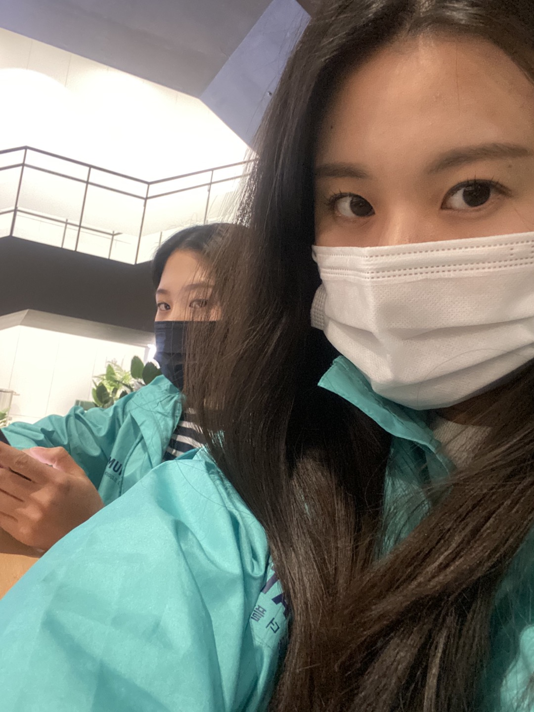
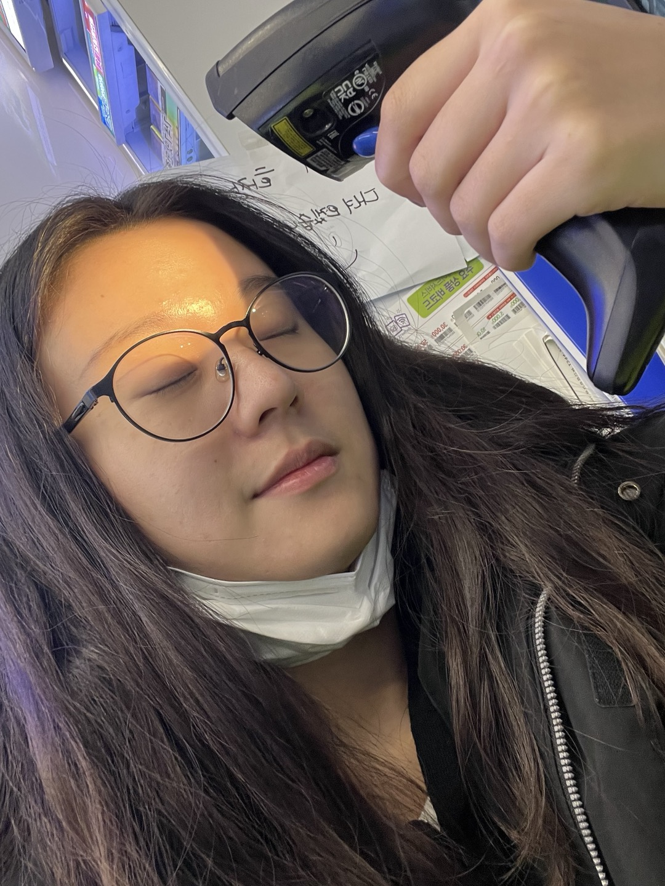
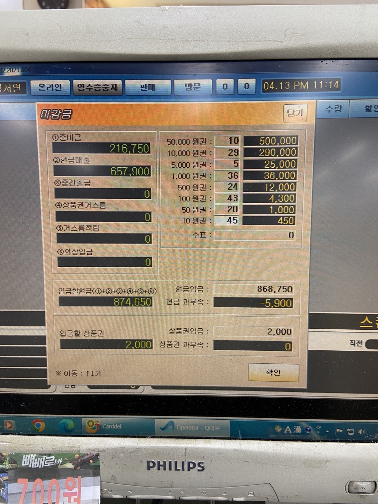

21살 겨울방학 때 한 모델하우스 아르바이트
정말정말 개꿀 알바다.
21년도는 코로나 때문에 인원제한이 있어 방문객들도 적었고 할 일도 적었고 쉬는 시간도 잘 보장이 돼서
꼭 다시 하고 싶은 아르바이트
단점은 단기 아르바이트고 현재는 부동산 침체기라서 그런지 구인글이 안 올라온다ㅜ
친구들이 아르바이트 구한다고 할 때 모델하우스 아르바이트 공고 뜨면 꼭 하라고 추천한다.

현재 하고 있는 편의점 아르바이트다!
주말 토, 일 8:00~15:00 총 7시간 일 한다.
여기도 나름 할만 하다. 물류도 10분이면 정리할 수 있는 정도 오고
주말 아침 시간이라서 사람들도 엄청 복작이지는 않는다.
하지만 여기 평택에 공장이 있어 막노동 하는 사람들이 많은데,
이 사람들이 한 번에 우르르 몰려들고 먹은 자리를 제대로 안 치우고 가면 혈압이 오른다..^^
사정 때문에 6월 말까지만 할 예정이지만 기회가 된다면 다시 할 예정이다.

22살 원광대에 합격했기에 익산에서 아르바이트를 구했다.
평일 월, 화 17:30~23:00 총 6시간 30분 일 했다.
여기 사장님이 친절하셔서 수업 늦게 끝나는 날이 있으면 이해해 주시고
일 하다가 먹을 것도 많이 챙겨주시고! 살 찌는 아르바이트 였다.
단점은... 사람들이 아주아주 많다는 것 하루 평균 250명 정도 손님이 왔다.
이 아르바이트 경험이 있어서 지금하는 편의점 알바가 안 힘들게 느껴지는 장점도 있다.